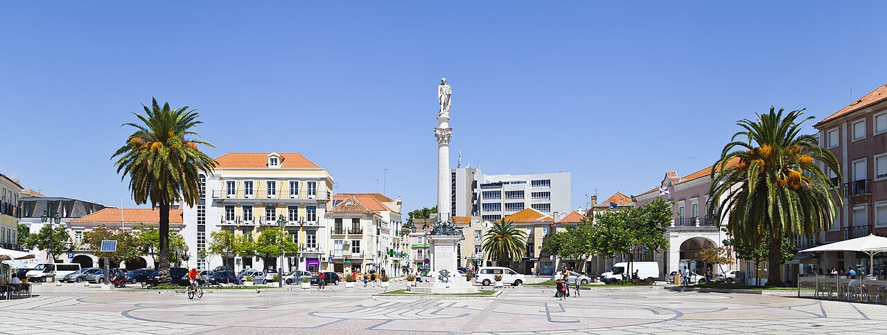
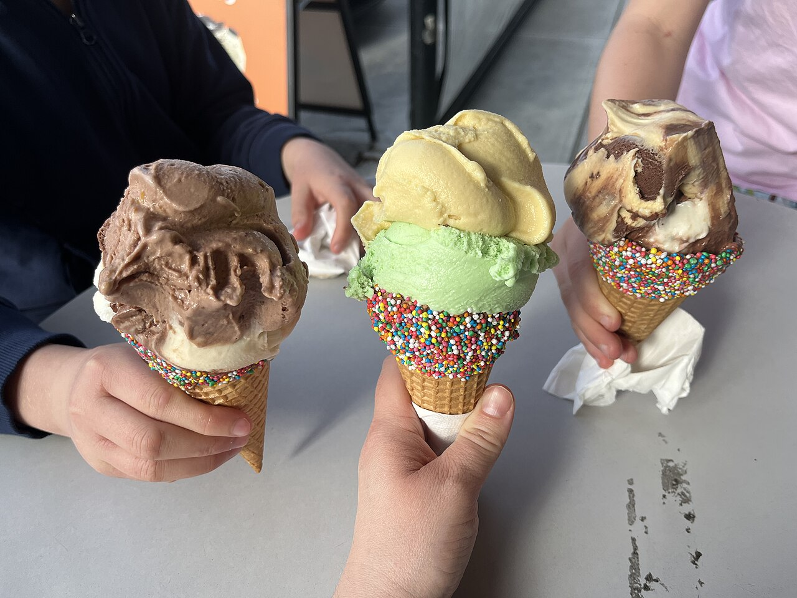
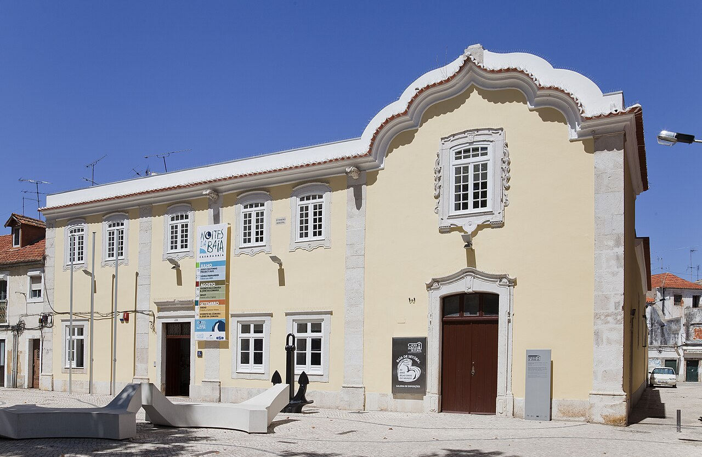
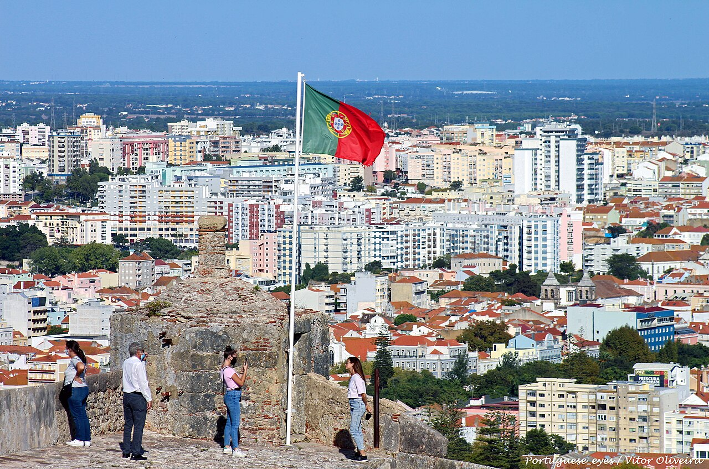
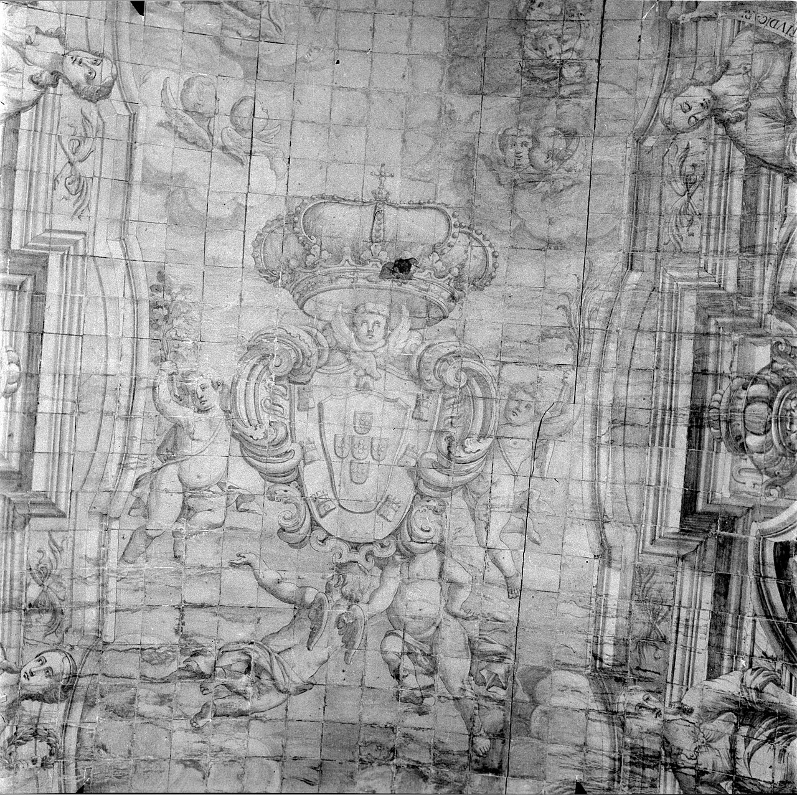

Today · Sun 21 June · Since we made the drive
An Afternoon in Setúbal
We're here, so let's make a day of it: the covered market before it shuts, an unhurried lunch, the cool old town and its tiled museum, a free hilltop fort with the best view of the bay — then back west to our table in Azeitão for dinner.
The plan — a day in Setúbal, dinner in Azeitão

Central Setúbal
market, lunch, a cool museum & a shaded square
The whole centre is walkable from one car park on the waterfront. Hit the market first (it shuts at two), eat the local dish nearby, then drift through the old town in the shade — a tiled convent museum, the main square, an ice cream.
- Mercado do Livramento Closes ~2pmThe covered market in azulejo — fish, fruit, cheese, flowers. Cool and free; the one timed thing today, so go straight there.
 Lunch — choco frito Local dishSetúbal's fried cuttlefish, two minutes from the market. Casa Santiago or O Baluarte do Sado on Avenida Luísa Todi.
Lunch — choco frito Local dishSetúbal's fried cuttlefish, two minutes from the market. Casa Santiago or O Baluarte do Sado on Avenida Luísa Todi. Convento de Jesus / Museu de Setúbal CoolAir-conditioned calm: one of the first Manueline buildings, rope-twist marble columns and a tiled chancel. Small, ~45 min. Closed Mondays.
Convento de Jesus / Museu de Setúbal CoolAir-conditioned calm: one of the first Manueline buildings, rope-twist marble columns and a tiled chancel. Small, ~45 min. Closed Mondays.
Praça de BocageThe main square — the poet's statue, the town hall, cafés, and shade trees by the fountain to sit under.
Ice cream in the squareThe gelato stop while the kids run the praça.
Casa da BaíaA tiled old house turned visitor centre on Avenida Luísa Todi — cool patios, regional info, and a counter pouring local Moscatel.
Forte de São Filipe
the free hilltop fort & the best view of the bay
A short drive up to the 16th-century star fort above the town — free to enter, breezy when the streets are baking, with the widest view of the Sado and Tróia. A tile-lined chapel inside and a café terrace for a long, slow drink. Going up around four leaves the whole evening unhurried.


- The ramparts & the view FreeWalk up to the roof for the panorama; ramparts for the kids to roam (mind the open edges).
- The tiled chapelA small chapel completely lined in early-18th-century azulejos.
- Café terraceA cold drink in the breeze, no clock on it — then drift back west when you're ready.
Dinner at Casa das Tortas
the reservation, in Azeitão
An unhurried drive west — about 25 minutes from the fort — to the table you already booked, on Praça da República in Azeitão. Leaving Setúbal around half five gives you time to settle: change at the house (five minutes away), wander the village, pick up cheese, and arrive easy. Courtyard grill, black pork, local wine, and the cheese and tortas the village is named for.

- Casa das Tortas Reserved · 7:30Black pork, fish off the courtyard BBQ, local wine, and — of course — the cheese and tortas.
 Queijo & tortas de Azeitão If you're earlyGrab the soft sheep's cheese and the rolled tortas to take home.
Queijo & tortas de Azeitão If you're earlyGrab the soft sheep's cheese and the rolled tortas to take home.
Also on this trip → Castle, Coast & Cheese · Lisbon, Day 1 · Day 2